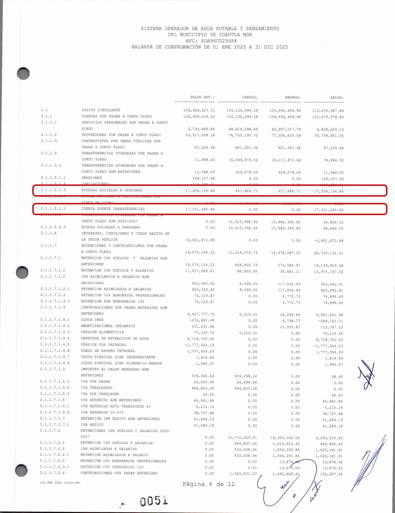

La cuenta que solo debía pasar
En la balanza de la cuenta pública 2025 del organismo de agua de Cuautla, el SOAPSC, aparece una "cuenta puente" de 17.2 millones de pesos, compensada casi al peso contra "ayudas sociales a personas". Una cuenta puente es dinero de paso, que no debería quedarse; y un organismo de agua no reparte ayudas sociales. El mismo año, a la red del agua llegaron 690 mil. Con la ilusión fiscal de Puviani y Buchanan: los artificios contables que esconden el destino del dinero público.
En contabilidad hay un tipo de cuenta que existe para no guardar nada. Se llama cuenta puente, y su función es exactamente esa: que el dinero pase por ahí un momento, de una mano a otra, y siga su camino. Es un pasillo, no una bodega. Por eso conviene detenerse cuando, en la cuenta pública 2025 del organismo operador de agua de Cuautla, el SOAPSC, aparece una cuenta puente con 17.2 millones de pesos parados dentro.
Hay una idea académica que ayuda a entender por qué eso importa. El economista Amilcare Puviani la llamó, en 1903, ilusión fiscal, y James Buchanan la retomó medio siglo después: es el conjunto de artificios contables e institucionales con los que el ciudadano deja de ver el verdadero destino del dinero público. No se trata de esconder el dinero, sino de esconder su recorrido. Una cuenta puente cargada de millones y compensada con una etiqueta que no le corresponde al organismo es, casi de manual, uno de esos artificios.
Veamos el dato, tal como está escrito en el documento oficial. La cuenta, identificada en la balanza como 2.1.1.5.1.5, "cuenta puente transferencias", registra 17.2 millones, y se compensa casi al peso contra un renglón llamado "ayudas sociales a personas". Ahí está la primera nota discordante: un organismo cuya razón de existir es llevar agua no reparte ayudas sociales a personas. Ese no es su trabajo, ni su facultad. Que 17 millones salgan por esa puerta, con esa leyenda, obliga a preguntar qué se movió en realidad.

Una cuenta que solo debía pasar, y en la que se quedaron 17 millones, ya no lleva a ningún lado: se volvió el destino.
La segunda nota la pone el contraste. Ese mismo año, a la red del agua, a las tuberías y las fugas, llegaron 690 mil pesos. No había dinero para el servicio, pero sí 17 millones cruzando una cuenta de paso bajo el rótulo de "ayudas". Cuando falta para lo esencial y sobra para lo que no se explica, el orden de las prioridades ya dijo algo.
Y la tercera es la naturaleza misma de la cuenta. Un puente que retiene 17 millones deja de ser un puente. Se vuelve un estacionamiento, o peor, una aduana donde el dinero entra por un concepto y sale por otro. El puente no es el problema en sí; el problema es dónde termina el cruce, y ese final es justo lo que la etiqueta "ayudas sociales" impide ver.
Es momento de ser justos, porque la prudencia también obliga. Un organismo de agua sí puede registrar apoyos legítimos: en 2025 el propio organismo aplicó alrededor de 16 millones de pesos en "ayudas sociales a personas" del ejercicio, que en un operador de agua corresponden a exenciones o condonaciones de pago a los usuarios que no alcanzan a cubrir el recibo, un subsidio que puede ser legítimo. Pero conviene no confundir esa cifra del año con la cuenta puente de 17.2 millones, que es un saldo heredado de administraciones anteriores, parado en una cuenta de paso. Y una cuenta puente puede ser un instrumento contable perfectamente correcto para transferencias en tránsito. No afirmo que aquí haya un desvío. Lo que llama la atención no es la existencia de la cuenta, es la conjunción de tres cosas: el monto, la etiqueta que no cuadra con la función del organismo, y el contraste con los 690 mil de la red.
La calificación de todo esto no es tarea de una columna. Las auditorías que ya corren, la forense que la Auditoría Superior de la Federación ordenó sobre el gasto de Cuautla, la número 1417, y la revisión de la Entidad Superior de Auditoría y Fiscalización del estado, tienen el documento en la mano y las herramientas para seguir el rastro cuenta por cuenta. Rige, para todos, la presunción de inocencia.
Pero hay algo que un ciudadano sí puede hacer, y que este espacio hace hoy: señalar dónde mirar. Si alguien quisiera empezar a auditar de verdad las finanzas del agua en Cuautla, no tendría que adivinar por dónde. La primera cuenta que debería abrir es la que lleva, ella misma, la confesión en el nombre. Porque una cuenta que solo debía pasar, y en la que se quedaron 17 millones, ya no lleva a ningún lado. Se volvió el destino.
El agua que se cobra y no se repara Ver el expediente →
- Cuenta Pública Anual 2025 del SOAPSC, balanza de comprobación (cuenta 2.1.1.5.1.5, "cuenta puente transferencias"), entregada al Congreso de Morelos y sellada por la ESAF (folio 224), 30 de enero de 2026.
- Auditoría Superior de la Federación, Modificaciones al PAAF de la Cuenta Pública 2025, DOF 5 de junio de 2026 (auditoría 1417, Municipio de Cuautla).
- Amilcare Puviani, Teoria della illusione finanziaria (1903); James M. Buchanan, Public Finance in Democratic Process (University of North Carolina Press, 1967).
- Ley de Presupuesto, Contabilidad y Gasto Público del Estado de Morelos, artículos 26 y 27 (obligación de justificar y comprobar el gasto con documentación original).
Las ligas van a la vista para que cualquiera compruebe por su cuenta. Si alguna dejó de resolver, escríbenos y la reponemos.
SRVO